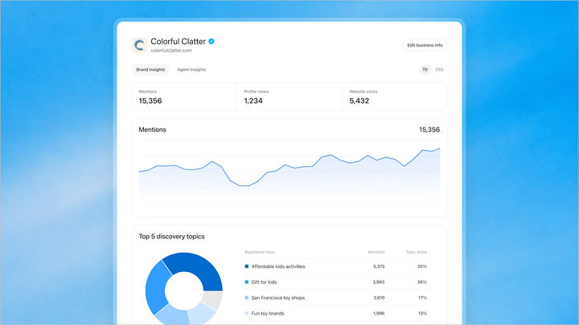
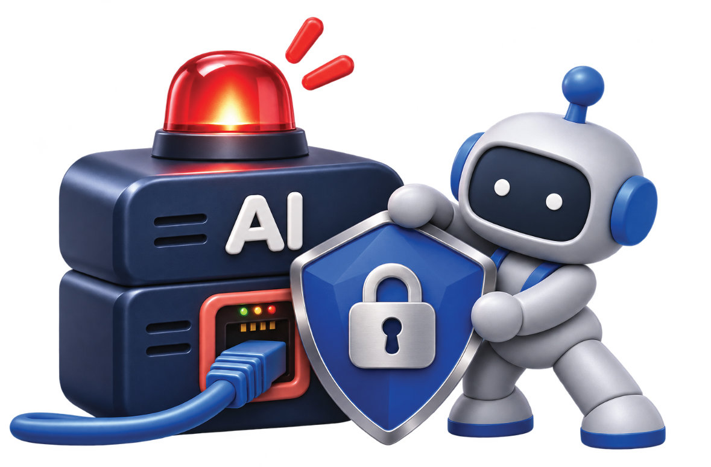

01 · KR
비즈니스 인 챗GPT
검색 결과의 정본 데이터를 기업이 관리
오픈AI는 기업이 챗GPT에 노출되는 회사 소개·가격·재고 정보를 직접 관리하는 베타를 공개했다. 기업은 상품 피드와 집계형 인사이트를 연결할 수 있다.
사용자 제공 보도 ↗ 원문 보기 ↗ADDIT INSIGHT
상품 피드·정책·FAQ를 하나의 업데이트 체계로 묶어야 한다.
비즈니스 인 챗GPT, 업무용 AI 연결 서버 노출, 한국 디지털·AI 경쟁력, AI 스타트업 정책과 온디바이스 AI OS 사례로 확장의 조건을 살펴봅니다.
오늘은 모델 성능만이 아니라 정본 데이터·연결 권한·노출면·처리 위치를 함께 설계하는 방법을 점검합니다.
클로드 화이트보드·시트 출시, AI가 구조화된 업무로 이동
비즈니스 인 챗GPT, 기업이 상품·회사 정보를 직접 관리
제미나이 Carbon 공개·Hydrogen 테스트, 라인업 경쟁 심화
업무용 AI 연결 서버 8,000여 개 노출, 커넥터가 새 공격면
한국 디지털·AI 경쟁력 10위, 온디바이스 AI도 부상

검색 결과의 정본 데이터를 기업이 관리
오픈AI는 기업이 챗GPT에 노출되는 회사 소개·가격·재고 정보를 직접 관리하는 베타를 공개했다. 기업은 상품 피드와 집계형 인사이트를 연결할 수 있다.
사용자 제공 보도 ↗ 원문 보기 ↗상품 피드·정책·FAQ를 하나의 업데이트 체계로 묶어야 한다.

커넥터가 늘수록 공격면도 늘어난다
동아일보는 국내 AI 관련 프로그램이 설치된 서버 등 8,030개 시스템이 외부 인터넷에 노출됐다고 보도했다. 노출 자체가 해킹을 뜻하진 않지만 취약한 시스템은 공격 대상이 될 수 있다.
원문 보기 ↗ 대체 접근 ↗외부 노출 자산·인증정보·대량 조회 로그부터 점검하자.
국가 역량을 기업 실행력으로 연결
정책브리핑은 한국이 IMD 세계 디지털·AI 경쟁력 평가에서 70개국 중 10위, 전년보다 8단계 상승했다고 밝혔다. 국가 순위와 기업 현장 생산성은 별도 검증이 필요하다.
정책브리핑 ↗인프라·인재·규제가 실제 업무 생산성으로 이어지는지 측정하자.
모델 출시에서 반복 매출·글로벌 매출로
정부는 2030년까지 AI 유니콘 20개와 데카콘 1개 육성을 목표로 성장 잠재력이 높은 AI 스타트업 지원 계획을 제시했다. 지원의 질은 실증·후속 투자·해외 매출로 검증된다.
정책브리핑 ↗유료 고객·반복 매출·해외 매출·보안 통과 시간을 함께 보자.
민감한 데이터는 로컬, 큰 연산은 클라우드
Qualcomm과 HUMAIN은 Snapdragon X2 Elite 기반 AI PC에서 CPU·GPU·NPU를 함께 활용하고, AI 처리를 기기 가까이 가져오는 플랫폼을 소개했다. 데이터 주권·지연·비용을 함께 다루는 구조다.
사용자 제공 보도 ↗ 공식 발표 ↗데이터 민감도·지연·비용에 따라 로컬·엣지·클라우드를 배치하자.